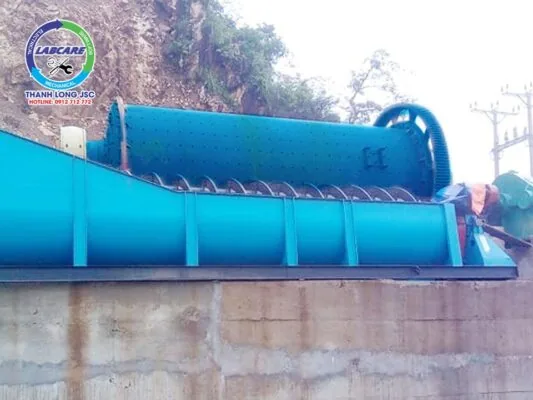
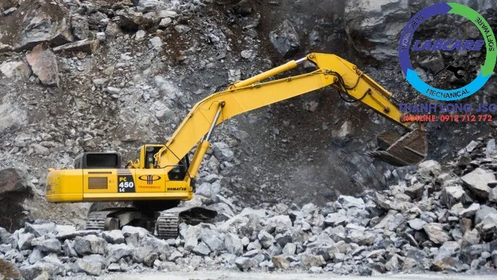

Quặng thô được nghiền – chế biến trước khi đem lại lợi nhuận, đòi hỏi trong việc sử dụng máy nghiền quặng có các thiết bị hiện đại. Trong dây chuyền nghiền quặng, có góp mặt của máy nghiền bi. Thiết bị này được cung cấp bởi Công ty Thanh Long, với công nghệ đặc biệt. Dành cho các đặc tính của quặng, có hiệu suất vượt trội và chất lượng lợi thế. Và báo giá máy nghiền bi cũng rất kinh tế và thiết thực.
Ưu điểm của Quặng tại Việt Nam trước khi vào báo giá máy nghiền bi
- Máy nghiền quặng được chế tạo trên cơ sở máy nghiền hàm, máy nghiền bi. Thiết kế cấu trúc thông minh và hợp lý. Thích hợp cho quặng tại mỏ Việt Nam, công nghệ nghiền tiên tiến.
- Nó có thể nghiền nát bất kỳ loại quặng nào ở Việt Nam. Và hiệu quả nghiền tốt hơn máy của những nhà cung cấp khác. Nhìn tổng thể hình khối của các thành phẩm có giá trị cao, chất lượng và được nhiều thị trường ưu chuộng.
- Hình dạng của khoang nghiền là khoang sâu với bề mặt cong gấp đôi, năng suất chế biến cho quặng lớn hơn và năng suất được cải thiện rất nhiều
- So với cùng loại thiết bị máy nghiền bi trên thị trường, hiệu quả nghiền của báo giá máy nghiền bi cao lên đến 50%. Là thiết bị máy nghiền bi có hiệu suất cao nhất trên thị trường.
- Thiết kế thông minh các thông số kỹ thuật, thiết kế khoa học của thiết bị bôi trơn. Và quá trình hoạt động an toàn và ổn định hơn.
- Các bộ phận dễ bị ảnh hưởng được làm bằng thép nhập khẩu cao cấp. Làm cho khả năng mài mòn, và chống va đập được cải thiện đáng kể. Chất lượng đáng tin cậy hơn và tuổi thọ rất dài.
- Chi phí đầu tư thấp, tiết kiệm lượng điện tiêu thụ. Làm cho tổng chi phí sản xuất, tiết kiệm được 80.000 nhân dân tệ.
- Báo giá máy nghiền bi là rất tiết kiệm và hiệu quả cao. Dịch vụ bán hàng hỗ trợ trước, trong và sau khi bán hàng.

Báo giá máy nghiền bi là gì ?
Báo giá máy nghiền bi là một thiết bị quan trọng, trong quá trình nghiền các loại vật liệu khô và ướt. Hiện nay, báo giá máy nghiền bi được sử dụng rộng rãi. Trong rất nhiều ngành công nghiệp như xi măng, vật liệu chịu lửa, silicat, VLXD mới, phân bón, kim loại màu, thủy tinh, gốm sứ, …Cấu tạo làm nên báo giá máy nghiền bi gồm:. Rulo ngoài, bánh răng chủ động. Bánh răng gắn vào rulo, tấm lót máy nghiền, bi nghiền, …
Nguyên lý cấu tạo và hoạt động của báo giá máy nghiền bi
Báo giá máy nghiền bi được cấu tạo bao gồm:. Thùng quay bên trong, chứa bi thép có kích thước khác nhau. Tấm lót máy nghiền bi bảo vệ thùng ngoài, hoạt động quay tròn thông qua truyền tải bánh răng ngoài. Các vật liệu nghiền đưa vào thùng nghiền hình trụ, thùng quay với tốc độ 4 – 20 vòng/phút. Tốc độ quay nhanh chậm tùy thuộc vào đường kính thùng nghiền, thùng nghiền có đường kính lớn sẽ cho tốc độ chậm hơn so với thùng có đường kính nhỏ.
Khi thùng quay lực ly tâm tạo ra, vật liệu nghiền và bi trong thùng được đưa lên độ nhất định. Dưới tác động của trọng lực các bi nghiền sẽ rơi tự do, va đập vào vật liệu nghiền làm chúng bị vỡ vụn. Kết quả của quá trình xảy ra liên tục, là vật liệu được nghiền thành bột mịn. Nếu thùng nghiền có tốc độ quay quá lớn, lực ly tâm lớn được tạo ra và các bi nghiền cùng vật liệu bị văng cuốn theo thành thùng mà không bị rơi xuống. Do đó không xảy ra quá trình va đập, tốc độ xảy ra quá trình như vậy gọi là “tốc độ tới hạn”. Để đảm bảo hiệu quả tốc độ nghiền, tốc độ quay của báo giá máy nghiền bi thường vào khoảng 65 – 75% tốc độ tới hạn.

Tấm lót máy nghiền bi chịu mài mòn và bi nghiền
Điều kiện làm việc trong các loại máy nghiền bi tương đối khắc nghiệt, đặc điểm vật liệu có độ cứng lớn. Do đó chất liệu làm bi nghiền, tấm lót máy nghiền bi cần có độ bền cao. Hiện nay, để sản xuất các loại bi nghiền và các loại tấm lót máy nghiền bi. Người ta chủ yếu sử dụng 3 loại nguyên liệu:. Thép có tỉ lệ mangan cao, các nguyên liệu thép hợp kim, gang có hàm lượng crom cao.
Trên đây là những giới thiệu cơ bản về nguyên liệu làm bi nghiền và tấm lót máy nghiền bi . Hiện nay có rất nhiều nhà sản xuất và báo giá máy nghiền bi, máy nghiền quặng đều thích sử dụng các loại bi nghiền và tấm lót máy nghiền bi được làm từ thép. Những tấm lót bi nghiền loại này có tính chịu mài mòn cao hơn, chịu va đập tốt hơn. Tuổi thọ cũng lâu hơn, có thể đáp ứng nhu cầu sử dụng tối đa mà ít phải thay thế bảo dưỡng.
Loại máy này sử dụng thích hợp cho các ngành công nghiệp khai thác nghiền đá, xi măng, quặng, hóa chất, vật liệu xây dựng, … Dựa vào yêu cầu sản xuất có thể phân thành hai loại là nghiền ướt, nghiền khô.

Hãy nhấc máy và gọi cho chúng tôi 0912.712.772 (miễn phí). Chúng tôi sẽ tư vấn, lên phương án lắp đặt, khảo sát mặt bằng. Giúp chủ đầu tư sở hữu giải pháp tối ưu nhất.
Ngoài ra Thanh Long JSC chuyên cung cấp:
- Trạm nghiền cát/đá/quặng cố định: Máy kẹp hàm, máy nghiền côn, sàng rung phân loại, máy nghiền cát nhân tạo, máy nghiền bi, máy tuyển từ …
- Trạm nghiền cát/đá di động: máy kẹp hàm di động, máy nghiền côn di động, sàng rung phân loại di động, máy nghiền cát nhân tạo di động,..
- Công nghệ rửa/tách: Máy rửa cát theo module, sàng rung tách nước, máy tuyển rửa cát, máy tách cát mịn, máy thu hồi cát mịn…
- Vật tư, thiết bị phụ tùng: Dao nghiền, lưới sàng, má kẹp hàm, nón côn, …
Liên hệ với Thanh Long JSC Kênh video Youtube
Page Facebook: Công Nghệ Máy Nghiền Đá
Website: https://thegioimaynghienda.com https://labcare.com.vn/
#bn